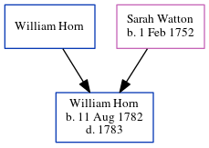

William Horn 1782 - 1783
[ Home ] | [ Calendar ] | [ Surnames Index ] | [ Census Index ] | [ Family History ]The eldest of 4 children of William Horn and Sarah Watton, William Horn, the four times great-uncle of Nigel Horne, was born on Aug 11, 1782 and baptized in Margate, Kent, England on Sep 30, 1782.
He died in 1783 and was buried at St John The Baptist Church in Margate on Oct 18, 17831.
Parents
- Sarah was born on Feb 1, 1752
Citations
- Kent, Canterbury Archdeaconry burials 1538-1988 - Findmypast
Media
Kent, Canterbury Archdeaconry burials 1538-1988 - GBPRS/CANT/D/95008163
Kent, Canterbury Archdeaconry baptisms 1538-1912 - GBPRS/CANT/B/96208441
England Births & Baptisms 1538-1975 - R_883172755
Family Tree
Generated by ged2site. Last updated on Jun 11, 2024